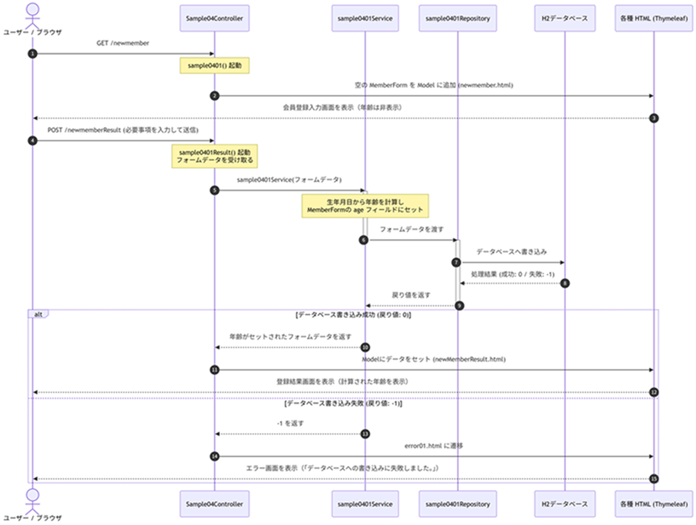
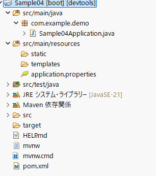

ニャジラの提案
リレーショナルデータベースを扱うなら、やっぱり、データベースの勉強はした方が良いと思います。
データベースに関してはいつの日にか解説すると思います。きっと。
１，Spring Framework データベース操作法
Spring Framework（Spring Boot）においてリレーショナルデータベース（RDBMS）を操作する代表的な2大アプローチとして、「Spring JDBC」 と 「Spring Data JPA」 が広く知られています。
| 項目 | Spring JDBC | Spring Data JPA |
|---|---|---|
| 抽象化レベル | 低い（SQLに近い） | 高い（オブジェクト指向的） |
| SQLの記述 | 開発者が自分でSQLを書く | フレームワークが自動生成する （JPA/Hibernate） |
| マッピング | 手動（ResultSetからJavaオブジェクトへ） | 自動（アノテーションベースでDBのテーブルとエンティティを紐付け） |
| 得意なこと | 複雑なSQL、大量データの高速処理、チューニング | 標準的なCRUD操作、オブジェクト同士の関連（1対多など）を活かした開発 |
| 学習コスト | SQLの知識があれば低い（JDBCの煩雑さを減らしたもの） | JPA/Hibernateの仕組みや独自のクエリ命名規則の理解が必要 |
最初に「Spring JDBC」、次に 「Spring Data JPA」の解説をしていきます。
２，Sample04のシナリオ
【主旨】
Spring MVC で言う、Repositoryの使い方の概要を解説します。
Spring MVC で言う、Repositoryの使い方の概要を解説します。
Spring MVC（およびSpring Boot/Spring Data）のアーキテクチャにおいて、リポジトリ（Repository）は、データベースや外部ストレージなどのデータ永続化層とのやり取りを専門に行うコンポーネント（層）です。
アーキテクチャ全体の中では、ビジネスロジックを担うサービス層（Service）と、データベースの間に位置し、データアクセスの詳細をカプセル化する役割を持ちます。
アーキテクチャ全体の中では、ビジネスロジックを担うサービス層（Service）と、データベースの間に位置し、データアクセスの詳細をカプセル化する役割を持ちます。
Sample04 シナリオ
１，ブラウザから http://localhost:8080/newmember へ GETリクエストを送信する。
２，Sample04Controller の @GetMapping("/newmember") アノテーションがついたメソッド sample0401() が起動する。
３，sample0401() は、空の MemberForm インスタンスを Model に追加し、newmember.html に遷移する。
MemberFormは、下記の様に定義している。
４，newmember.html は、Thymeleaf を用いて作成され、Model のフォームデータを画面にバインドする。
ただし、年齢は後で計算するので、ここでは、表示しない。
５，ユーザーはブラウザから必要事項を入力し、サーバーに送信する。
６，Sample04Controller の @PostMapping("/newmemberResult") アノテーションがついたメソッド sample0401Result() が起動する。
sample0401Result() は、クライアントから送られてきた値（フォームデータ）を受け取る。
Service の sample0401Service に フォームデータを引数として渡す。
７，sample0401Service は、受け取った生年月日から年齢を計算する。
sample0401Service 内で受け取ったフォームデータ（MemberForm）の age フィールドに、計算した年齢をセット（格納）する。
sample0401Service は、sample0401Repository にフォームデータを渡す。
８，sample0401Repository は受け取ったフォームデータをH2データベースに書き込む。
データベースに書き込み成功した場合は 0 を返す。失敗した場合は -1 を返す。
9, sample0401Service は、リポジトリの戻り値が 0 なら「年齢がセットされたフォームデータ」を、-1 の場合は -1 を Controller に返す。
10，sample0401Result() は、-1 でなければ、Model にフォームデータ（または年齢）をセットし、newMemberResult.html に遷移する。
-1 の場合、error01.html に遷移する。
11，newMemberResult.html は、Model に渡されたデータを Thymeleaf で展開し表示する。
ここで初めて、計算した年齢を表示する。
12,error01.html には、「データベースへの書き込みに失敗しました。」を表示する。
13，処理を終了する。
MemberFormは下記の様に定義している。
public class MemberForm {
private String kanjiSei; // 漢字姓
private String kanjiMei; // 漢字名
private String kanaSei; // カナ姓
private String kanaMei; // カナ名
private String birthDate; // 生年月日(yyyy-mm-dd 形式)
private String age; //年齢
private String postalCode; // 郵便番号
private String address; // 住所
}
３，シーケンス図

だいぶごちゃごちゃしてきました。
何度も申し上げますが、きれいに書くのが目的ではありません。
どういう流れで処理をするのかをシミュレーションするのが目的なのです。
何度も申し上げますが、きれいに書くのが目的ではありません。
どういう流れで処理をするのかをシミュレーションするのが目的なのです。
４，プロジェクトの前提設定（Spring Initializr）
| No. | 項目 | |
|---|---|---|
| １ | IDE | Eclipse |
| ２ | プロジェクト名 | Sample04 |
| ３ | Dependencies | Spring Web、Thymeleaf、H2 Database、Lombok、 Spring Data JDBC（または Spring Data JPA / JDBC API） |
| 4 | 最初のパッケージ構成 |
 |
５，設定ファイル (src/main/resources/application.properties)
Spring JDBCの設定です。
src/main/resources/フォルダの中にapplication.propertiesファイルに書き込んでください。
src/main/resources/フォルダの中にapplication.propertiesファイルに書き込んでください。
spring.datasource.url=jdbc:h2:mem:testdb
spring.datasource.driverClassName=org.h2.Driver
spring.datasource.username=sa
spring.datasource.password=
spring.h2.console.enabled=true
spring.h2.console.path=/h2-console
spring.datasource.driverClassName=org.h2.Driver
spring.datasource.username=sa
spring.datasource.password=
spring.h2.console.enabled=true
spring.h2.console.path=/h2-console
正確には、「インメモリ接続」と言います。
主にH2 Databaseなどのインメモリデータベースに対してアプリケーションを接続し、データをハードディスクや外部サーバーではなく、Javaアプリケーションのメモリ（RAM）上で管理・処理する仕組みを指します。
主にH2 Databaseなどのインメモリデータベースに対してアプリケーションを接続し、データをハードディスクや外部サーバーではなく、Javaアプリケーションのメモリ（RAM）上で管理・処理する仕組みを指します。
６，テーブル定義 (src/main/resources/schema.sql)
H2データベースの接続設定を行います。
アプリケーション起動時に自動でH2データベースへテーブルを作成するSQLファイルです。
src/main/resources/フォルダの中にschema.sqlファイルを作ってその中に書き込んでください。
src/main/resources/フォルダの中にschema.sqlファイルを作ってその中に書き込んでください。
CREATE TABLE IF NOT EXISTS member (
id INT AUTO_INCREMENT PRIMARY KEY,
kanji_sei VARCHAR(50),
kanji_mei VARCHAR(50),
kana_sei VARCHAR(50),
kana_mei VARCHAR(50),
birth_date VARCHAR(20),
age VARCHAR(10),
postal_code VARCHAR(20),
address VARCHAR(255)
);
７，ソースコードの実装
ここから実際のプログラム例を解説していきます。
まずは、
まずは、
７-１，フォームクラス (com.example.demo.form.MemberForm.java)
Lombokの@Data アノテーションを使用しています。
Lombokは、setter、getterをわざわざ書かないのでプログラムがすっきりします。
Lombokは、setter、getterをわざわざ書かないのでプログラムがすっきりします。
formパッケージを作って、その中にのMemberForm.javaファイルを作って、その中に書き込みます。
これが、Modelの元ですね。
これが、Modelの元ですね。
package com.example.demo.form;
import lombok.Data;
@Data
public class MemberForm {
private String kanjiSei; // 漢字姓
private String kanjiMei; // 漢字名
private String kanaSei; // カナ姓
private String kanaMei; // カナ名
private String birthDate; // 生年月日(yyyy-mm-dd 形式)
private String age; // 年齢
private String postalCode; // 郵便番号
private String address; // 住所
}